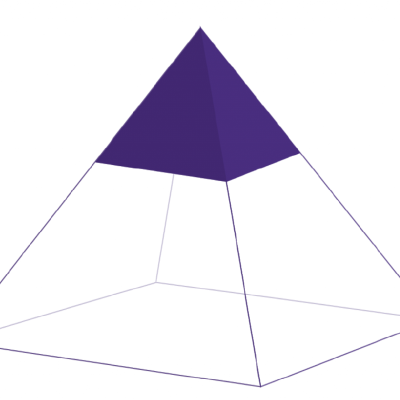

SDS 410: Capstone
Syllabus
This one-semester course leverages students’ previous coursework to address a real-world data analysis problem. Students collaborate in teams on projects sponsored by academia, government, and/or industry. Professional skills developed include: ethics, project management, collaborative software development, documentation, and consulting. Regular team meetings, weekly progress reports, interim and final reports, and multiple presentations are required. Open only to Statistical and Data Science majors.
Classes will be held on Tuesdays and Thursdays from 1:20 PM to 2:35 PM.
Course Instructor

I am a cultural anthropologist that studies how civic data gets produced, how communities think about and interface with data, and how data infrastructure can be designed more equitably. My Ph.D. is in an interdisciplinary discipline called Science and Technology Studies - a field that studies the intricate ways science, technology, culture, and politics all co-constitute each other. I work on a number of collaborative research projects that leverage public data to deepen understanding of social and environmental inequities in the US, while also qualitatively studying the politics behind data gaps and inconsistencies. As an instructor, I prioritize active learning and often structure courses as flipped classrooms. You can expect in-class time to predominantly involve group activities and live problem-solving exercises.
Pedagogical Partner
Swaha Bhattacharya
Getting in Touch
I can best support students in this course when I can readily keep tabs on our course-related communication. Because of this, I ask that you please don’t email me regarding course-related questions or issues. The best way to get in touch with me is via our course Slack. If you have course-related questions, I encourage you to ask them in the #sds-410-questions channel. When discretion is needed, feel free to DM. Please reserve more formal concerns like grades or accommodation requests for an in-person (or in-person virtual) conversation.
During the week, I will try my best to answer all Slack messages within 24 hours of receiving them. Please note that to maintain my own work-life balance, I often don’t answer Slack messages late in the evenings or on the weekends. It’s important that you plan when you start your assignments accordingly.
Meeting with me outside of class is a great opportunity for us to chat about what you’re learning in the course, clarify expectations on assignments, and review work in progress. I also love when students drop in to office hours to request book recommendations, discuss career or research paths, or just to say hi!
There are two ways to meet with me. If you would like to have a one-on-one private conversation, I ask that you schedule an appointment with me via the booking form on Moodle. For support on class topics, you may drop-in during my regularly scheduled office hours.
Monday, 11-12, Sabin-Reed 331 Tuesday, 11-12, Sabin-Reed 331 Thursday, 11-12, Sabin-Reed 331
Course Texts
This semester we will be reading selections from two books Discriminating Data: Correlation, Neighborhoods, and the New Politics of Recognition by Wendy Hui Kyong Chun and Data Cartels: The Companies That Control and Monopolize Our Information by Sarah Lamdan. The books should be available at the Smith bookstore.
Assessment
This course will be graded via self-assessment.
Wurtele Center
Smith’s Wurtele Center is tremendously supportive of this course. Megan Lyster at the Wurtele Center will help facilitate some collaboration workshops in our course and help teams reflect on how collaborations are progressing. I encourage you to check out their resources and events.
Policies
This is a 4-credit course with 3 hours per week of in-classroom instructions. Smith expects students to devote 9 out-of-class hours per week to 4-credit classes. I have designed the course assignments and selected the course readings with this target in mind.
Attendance is essential in this course as you will be completing project work in-class with peers. If you must miss a class please inform me via Slack. Please note that the SDS Program has adopted a shared policy regarding in-person attendance this semester:
In keeping with Smith’s core identity and mission as an in-person, residential college, SDS affirms College policy (as per the Provost and Dean of the College) that students will attend class in person. SDS courses will not provide options for remote attendance. Students who have been determined to require a remote attendance accommodation by the Office of Disability Services will be the only exceptions to this policy. As with any other kind of ADA accommodations, please notify your instructor during the first week of classes to discuss how we can meet your accommodations.
There is a 24-hour grace period on all written assignments. There will be no penalties for submitting the written assignment within this 24-hour period, and you do not need to inform me that you intend to take the extra time. You can also request up to a 72-hour extension on any written assignment, as long as you make that request at least 48 hours before the original assignment due date. You can request an extension by filling out the Extension Request form on Moodle, and I will confirm your extension on Slack. Beyond this, late assignments will not be accepted.
Smith College expects all students to be honest and committed to the principles of academic and intellectual integrity in their preparation and submission of course work and examinations. Students and faculty at Smith are part of an academic community defined by its commitment to scholarship, which depends on scrupulous and attentive acknowledgement of all sources of information, and honest and respectful use of college resources. Any cases of dishonesty or plagiarism will be reported to the Academic Honor Board. Examples of dishonesty or plagiarism include:
- Submitting work completed by another student as your own.
- Copying and pasting words from sources without quoting and citing the author.
- Paraphrasing material from another source without citing the author.
- Failing to cite your sources correctly.
- Falsifying or misrepresenting information in submitted work.
- Paying another student or service to complete assignments for you.
- Submitting work generated by artificially intelligent tools such as chatGPT.
Community
As the instructor for this course, I am committed to making participation in this course a harassment-free experience for everyone, regardless of level of experience, gender, gender identity and expression, sexual orientation, disability, personal appearance, body size, race, ethnicity, age, or religion. Examples of unacceptable behavior by participants in this course include the use of sexual language or imagery, derogatory comments or personal attacks, trolling, public or private harassment, insults, or other unprofessional conduct.
As the instructor I have the right and responsibility to point out and stop behavior that is not aligned to this Code of Conduct. Participants who do not follow the Code of Conduct may be reprimanded for such behavior. Instances of abusive, harassing, or otherwise unacceptable behavior may be reported by contacting the instructor.
All students and the instructor are expected to adhere to this Code of Conduct in all settings for this course: seminars, office hours, and over Slack.
This Code of Conduct is adapted from the Contributor Covenant, version 1.0.0, available here.
I hope that we can foster a collaborative and caring environment in this classroom: one that celebrates successes, respects individual strengths and weaknesses, demonstrates compassion for each other’s struggles, and affirms diverse identities. Here are some ideas that I have for creating this environment in our course:
- Check-in with colleagues before starting collaborative work. “What three words describe how you’re feeling?” “Name one challenge and one success from this week.” “What are you doing for self-care right now?” Thank each other for sharing where they’re at.
- Consider when to step up and when to step back in class discussions, creating space for others to contribute. Listening is just as important to community-building as speaking.
- Acknowledge that there is much we don’t know about how our colleagues experience the world. …but don’t ask colleagues to speak on behalf of a social group you perceive them to be a part of.
- Cheer on colleagues as they give presentations or try something out for the first time.
- Ask questions often in our
#sds-410-questionschannel. Help each other out by answering questions when you can. - Mistakes happen. I will certainly make mistakes in class. Admit mistakes, and then move on.
Using the proper pronouns for our students is foundational to a safe, respectful classroom environment that creates a culture of trust. For information on pronouns and usage, please see the Office of Equity and Inclusion link here: Pronouns
Support
It is my goal for everyone to succeed in this course. If you have personal circumstances that may impact your experience of our classroom, I encourage you to contact Office of Disability Services in College Hall 104 or at ods@smith.edu. The Office will generate a letter that indicates to me what kind of support you need and how I can make your classroom experience more accommodating. Once you have this letter, you are welcome to visit my office hours or email me to discuss ideas about how we can tailor the course accordingly. While you can request accommodations at any time, the sooner we start this conversation, the better. If you have concerns about the course that are not addressed through ODS, please contact me. At no point will I ask you to divulge details about your personal circumstances to me.
College life is stressful, and life outside of college can be overwhelming. It is my position that attending to your physical and mental health and well-being should be a top priority. I will remind you of this often throughout the semester. I encourage you to schedule a time to talk with me if you are struggling with this course. If you, or anyone you know, is experiencing distress, there are numerous campus resources that can provide support via the Schacht Center. I can point you to these resources at any time throughout the semester.
A trigger is a topic or image that can precipitate an intense emotional response. When common triggering topics are to be covered in this course, I will do my best to provide a trigger warning in advance of the discussion. However, I can’t always anticipate triggers. With this in mind I’ve set up an anonymous form, available on Moodle, where you can indicate topics for which you would like me to provide a warning.
Infrastructure
Grades, forms, and handouts will be available on the course Moodle.
#general: Course announcements (only I can post)#sds-410-discussions: Share news articles and relevant opportunities#sds-410-questions: Ask and answer questions about our course- You can also create private Slack channels with your project group members.
I will be using GitHub Classroom to distribute several course assignments, and you will submit assignments by pushing changes to template documents to a private GitHub repository. I will provide guidance on how to do this early in the semester.
RStudio/RStudio Server
This class will use the R statistical software package. In the first week of the course, I will help you install and configure R and RStudio. If you are using a laptop, you will install both on that computer. If you are using a Chromebook or Tablet, an account will be created for you on the Smith College RStudio Server so that you can access a cloud-based version of RStudio. You should let me know in the first week of the course if you are using a Chromebook or tablet.